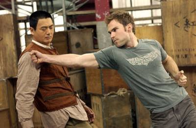

BULLETPROOF MONK (2003) — CERTIFIED MGC VF-35

🏛️ MGC RESOURCES COURT: INITIAL INQUEST CASE
- ASSET TITLE: Bulletproof Monk (2003) – The Ancient Scroll Guardian Ledger
- PROPOSED BASE GRADE: Certified MGC VF-35 (Choice Very Fine / High-Nostalgia Cult Luster)
- PRESIDING JUDGE: Judge Mina, Chief of Resources (Ruby Room)
- CASE FILE: #038
📜 THE FORENSIC NARRATIVE BREAKDOWN & RECOVERY
Blending high-velocity Hong Kong wire-fu tradition with late-90s comic book energy, this 2003 adaptation defies its initial critical reception to emerge as a resilient cult favorite with strong collector eye appeal.
🚨 THE THREE SPECIFIC PLANCHET FLAWS:
1. The Early-Digital Corrosion Pattern (Visual Effects Scuff)
- Heavy reliance on unpolished CGI, floating wire-work, and uncalibrated green-screen backgrounds during rooftop and subway sequences degrades the physical production value.
2. The Stifler Dialogue Friction (Tonal Alloy Imbalance)
- Seann William Scott’s fast-talking, early-2000s teen-comedy persona clashes awkwardly with Chow Yun-fat’s disciplined, ancient mystical gravity.
3. The Cartoonish Autocracy Loop (Antagonist Structural Defect)
- An aging Nazi commander and a campy stylized villain hierarchy thin out the third-act tension, reducing the climax to generic doomsday tropes.
APPELLATE RULING:
Chief Executive Overrides
🚨 THE AMENDED PLANCHET STATE
1. The Early-Digital Corrosion Pattern (Visual Effects Scuff)
SUSTAINED
Heavy reliance on unpolished CGI and floating wire-work during rooftop and subway sequences remains logged as a surface production defect.
2. The Stifler Dialogue Friction (Tonal Alloy Imbalance)
OVERRULED BY THE CHIEF
Reclassified as a critical character asset. Seann William Scott’s performance is recognized as a brilliant comedic asset—the perfect cinematic embodiment of an unpolished “white belt” learner who elevates the dynamic trajectory.
3. The Cartoonish Autocracy Loop (Antagonist Structural Defect)
SUSTAINED
The late-game shift into generic third-act doomsday tropes under a campy antagonist hierarchy remains a structural limitation.
⚖️ FINAL JUDICIAL VERDICT
- With the white-belt dynamic officially certified as an intentional comedic pillar, the asset securely locks into the registry at a VF-35 Choice Very Fine.
Case Closed.

• © 2026 MOVIE GRADING CONSENSUS. All Sovereign Rights Reserved.